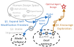
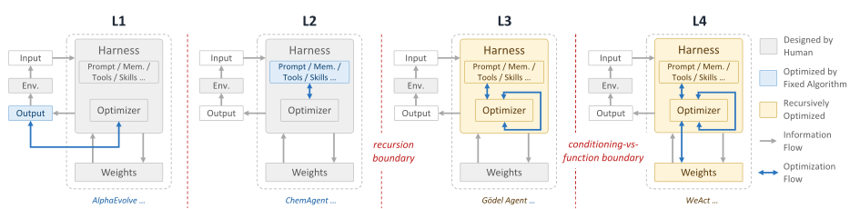
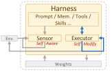
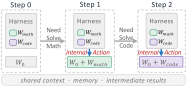
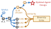

Imagine a coding agent working with you for six months. Every code review it has done, every reminder you mentioned in passing, and every architectural decision it watched you reverse accumulates over time. The context grows proportionally with how long the agent has been on the job. At some point, the agent has to improve itself by consolidating its experience into capabilities.
This position calls for an agent that can rewrite itself in both parametric and non-parametric ways while remaining stable enough to keep doing so over a long deployment.

Improvement requires the agent to modify its own harness and weights. The framework has three connected parts. The first expands self-modification freedom so that the agent can modify both its harness and its optimizer. The second makes each weight change a discrete, reversible action that the agent can audit. The third adds a selector that points the agent toward skills it does not already have.
Freedom alone is not enough: writing weights at runtime can erase what was already there. Reversibility keeps the agent stable, but it does not tell the agent what to learn next. These two problems motivate WeAct and the Diversity Critic, respectively.
Swipe horizontally to compare all four levels.

Self-Modification: Giving the Agent Room to Improve
We organize self-improving agents into four levels (Figure 2). At L1, the agent improves only its outputs; AlphaEvolve is a good example. At L2, it edits its prompts, tool selection, or memory under a fixed optimizer, such as a prompt-tuning loop or an RL update rule. ChemAgent is an example of this level. At L3, the optimizer itself becomes editable, so an improvement to how the agent learns is itself something the agent can learn. At L4, the weights become editable, which is the only level at which the agent can acquire capabilities its initial weights cannot represent.

We built Gödel Agent to push L3 as far as it goes. The system pairs a sensor that reads its own running harness with an executor that can rewrite any part of that harness, including the optimizer that performs the rewriting. Given only a high-level objective, it edits its own harness and outperforms the prior best meta-agent by 11% on MGSM. On Game of 24, it rewrites itself to drop the LLM-based reasoner for a search algorithm and reaches 100% accuracy, a strategy no human-written scaffolding had encoded. The framework has since been built on by the Darwin Gödel Machine and Hyperagents.
L3 still has a ceiling. At the prompt, tool, or memory level, the agent can exhibit only what its weights already contain. Our Knowledge Boundary work measures this ceiling directly: across domains and prompt families, every model has a frontier of facts and skills that no prompt reaches.
Our first L4 attempt gave Gödel Agent direct write access to weights. Capability improved on the target tasks, but the runs failed in three ways: narrow updates overwrote pretrained capabilities (catastrophic forgetting); gradient-level changes were opaque to the agent's own evaluator (verifiability collapse); and because every edit changed the model that performed the next edit, small errors compounded across steps (recursive instability).
One response is to constrain the freedom with a fixed human-designed prior, as in ContraSolver, where a hand-written rule drives DPO updates from contradictions surfaced by the model. WeAct keeps the freedom and contains it differently: every weight edit becomes a discrete, reversible action that the agent can audit as an external tool call.
WeAct: Making Weight Changes Safe and Auditable

WeAct lets the agent keep editing its weights throughout a trajectory, but only inside a structured weight-modification space: low-rank deltas over a fixed base, indexed by a library. Each change is bounded and reversible, and the agent's evaluator can see what changed.
In standard agent setups such as ReAct, the agent interleaves reasoning with external actions: search, code execution, and calls to tools. WeAct adds internal actions that reconfigure the agent's weights mid-trajectory. The agent maintains a library of capability-specific deltas and exposes load and offload as native tool calls.
A loaded delta is not a sub-tool that receives a query and returns a result. The modified model retains the agent's full context, memory, and intermediate state. The delta therefore changes how the model reasons about everything it is currently holding, not just what it returns for one sub-call. LoRA is the present implementation because low-rank adapters compose cleanly and cost little to swap, but the interface is general: block-sparse deltas, activation steering, or dynamically synthesized deltas can sit behind the same callable, reversible action.
This design addresses the three failures above. The fixed base and reversible deltas prevent forgetting; discrete tool calls restore auditability under the same telemetry used for external actions; and pre-trained deltas prevent a failed update from destroying the underlying model.
We are evaluating WeAct on deep-research benchmarks where mid-trajectory specialization should matter most, including GAIA and BrowseComp, with general-capability checks to detect regressions. Early results give WeAct +8% on GAIA and +6% on BrowseComp over the strongest tested baseline.
WeAct currently selects from a pre-trained library of deltas. The next step is an autonomous training loop: when the Diversity Critic finds a target capability that no current delta covers, the agent trains a new delta and adds it to the library.
Diversity Critic: Selecting What to Learn Next

WeAct stabilizes the agent but does not tell it what to learn next. An agent that learns only from its own outputs can plateau because nothing in the loop forces it to acquire a skill it does not already partially have. Our ALCUNA work shows one symptom: out-of-distribution compositions of facts and skills fail unevenly. The Knowledge Boundary frontier marks where the agent could go if outside targets were available.
I propose a Diversity Critic that supplies such targets. The Critic encodes existing methods, places the agent's current capabilities inside that representation, and selects the next training target as a direction far from what the agent already does.
A method encoder maps any candidate capability or method description - a paper abstract, code commit, user correction, or tool description - to a vector in a representation space. It can be initialized from text embeddings and refined with activation fingerprints so that it tracks where the agent's reasoning manifold actually lies. Within this space, the WeAct deltas and the base model's elicitable skills define a covered region. The Critic scores each candidate by its distance from that region and returns a high-scoring candidate as the next delta to train.
The Critic can be evaluated in two settings. On deep-research tasks, Critic-driven delta selection should produce a library whose held-out coverage exceeds random, uncertainty-based, and human-curated baselines. On a long-horizon deployment whose capability targets shift over time, Critic-selected deltas should track the shift while capability on a held-out evaluation set grows.
Composition is the hardest case. A single delta does not always resolve a target; some targets need a combination of skills. Our recent atomic-skills result shows that reinforcement learning composes complex reasoning only when the atomic skills are first independently mastered. This gives the Critic a natural ordering: propose atomic targets first, and propose composites only when the atomic neighbors are already in the library.
The Critic and the agent co-evolve. As the weights change, the encoder has to track where capabilities now sit; as the covered region grows, the Critic selects different directions. Without an external selector, L4 freedom can plateau on the agent's own outputs. With one, a deployment whose useful skills change over months can drive those changes into capabilities instead of holding everything in context.
Final Remarks
The full system has three replaceable pieces: a frozen base model, a delta library that grows over a deployment, and a Critic that selects which delta to train next. The near-term work is to extend WeAct so that the agent can train its own deltas on open-ended tasks, then close the loop with the Diversity Critic on a deployment whose capability targets shift over time.
The position is simple: long-horizon agents should not only accumulate experience in context. They should be able to consolidate that experience into their own problem-solving machinery. Self-modification provides the freedom, WeAct provides stability and auditability, and the Diversity Critic provides pressure to explore beyond the current local optimum.
References
- Novikov et al. (2025). AlphaEvolve: A Coding Agent for Scientific and Algorithmic Discovery.
- Tang et al. (2025). ChemAgent: Self-updating Memories in Large Language Models Improves Chemical Reasoning. ICLR 2025.
- Yin et al. (2025). Gödel Agent: A Self-Referential Agent Framework for Recursively Self-Improvement. ACL 2025.
- Zhang et al. (2026). Darwin Gödel Machine: Open-Ended Evolution of Self-Improving Agents. ICLR 2026.
- Zhang et al. (2026). Hyperagents.
- Yin et al. (2024). Benchmarking Knowledge Boundary for Large Language Models. ACL 2024.
- Yin et al. (2023). ALCUNA: Large Language Models Meet New Knowledge. EMNLP 2023.
- Yin et al. (2024). History Matters: Temporal Knowledge Editing in Large Language Model. AAAI 2024.
- Cheng et al. (2025). Atomic Skills are the Prerequisite.